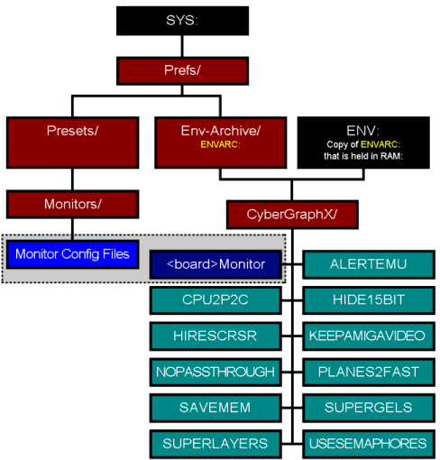

There now are section for V2 & the new V3/V4. Please use the correct section.
The ENV page for CyberGraphX V2 is here.
CyberGraphX V3/V4
has had many changes in layout vs V2. The libraries in libs:, The Monitor file in devs:monitors ,
and The "config" files and ENV VARs are all the same. New with V3/V4 is tooltypes for the Monitor file. The installer should have installed all the files and set all the enviroment settings
and tooltypes, but you can check here to see if something is missing or set up wrong.
Before you install CyberGraphX you should know the MAX khz of your monitor!
Libs
The 3 main CyberGraphX V2 libraries have been moved into 1 file, this is called cgxsystem.library
There is a new lib called cgxbootpic.library, this has the boot picture information.
vilintuisup.library still can be used with V3/V4 if you wish, but is becomming outdated. This is for Picasso II(+) owners to help try
to run older Picasso II(+) software that needs this library. vilintuisup.library MAY let other
CyberGraphX cards run the older Picasso II(+) software BUT it is not really ment for this. One of the side effects
is that the colors will/might be off or stange/shifted on other cards.
gtlayout.library is still around for V3/V4. This is used by CGXMode.
If you have a CV3D then you should have cgxvideo.library installed. This is the lib for stuff like
video overlay and other video function that the CV3D can do.
Last library comes from the Isis archive. This is a MPEG player for CGX. It is called
cgxmpeg.library. This does not come with CGX Updates.. but again is in the Isis archive and
if you ran the installer should be installed int he libs: dir.
| NEW and OLD libraries that have come with CGX packages |
| Library | Function | Where Found | Used With |
| cgxsystem.library | Main library for CGX V3/V4. When CGX V3/V4 is run it will make a resident 'cybergraphics.library' so that all CGX V2 programs will work. | CyberGraphX Page |
V3/V4 |
| cgxbootpic.library | Boot Picture lib for CGX V3/V4 (Holds the boot logo/picture). You can make your own boot lib with CGXBootPicMaker | CyberGraphX Page |
V3/V4 |
| cgxvideo.library | This is the lib used for stuff like video overlay and other video function. Currently only CV3D uses this. | CyberGraphX Page |
V3/V4 |
| cgxmpeg.library | Used by the Isis program, MPEG package for CGX V3. | Isis Page |
V2, V3/V4 |
| cybergl.library | Used by the CyberGL Package and CyberGL programs, a subset of OpenGL. | CyberGL Page |
V2, V3/V4 |
cybergraphics.library
cyberlayers.library
cyberintuition.library | Main Libs used by CGX V2. These are not needed for CGX V3/V4. | CGX V2 Files |
V2 |
| cyberncg.library | Lets you use the V43DataTypes on NON-CGX systems (ncg=no cybergfx). Support for this was dropped LONG ago! | V43DT Page |
V2 |
| vilintuisup.library | Used by CGX V2 or V3/V4 to try and let older PicassoII programs run under CGX, see above. It is not really used anymore. | CGX V2 Files |
V2, V3/V4 |
| gtlayout.library | GadTools layout lib. Used with CGXMode and CVMode. | CGX V2 Files |
V2, V3/V4 |
Monitor
The monitor file that is stored in devs:monitors can be the following:
CVision3D, CVision64, Spectrum, Piccolo, PiccoSD64, PicassoII, Inferno, AGA. NOTE the name changes for from
Cybervision to CVision64, and Picasso to PicassoII for V3/V4 release.
Also the ConfigFiles for V3/V4 have moved. NOTE: In V2 they were stored in ENV(ARC):Cybergraphics/,
they now are stored at: sys:prefs/presets/monitors.
NOTE: you MUST NOT change the MonitorDriver name. For example if you have a CyberVision64... the monitordriver
name in devs:monitors is CVision64 and with that the CVision64.info file. If you rename the Monitordriver
to 'CV' or anyother name the driver WILL NOT find the tooltypes. If it can't find the tooltype then CGX V3/V4
will not get setup the way you want.
ToolTypes
The Tooltype are where you can set a few settings that will effect That 1 board. So if you have say a CV64 and PicassoII
in 1 system, there are settings that can effect just 1 card not all that are installed in the system.
In this example we will use the CVision3D. You need to go into the DEVS dir on your system partition. Then into
the Monitors directory. Now click 1 time on the CVision3D icon. Then with the pulldown-menus select
Icons->Information.... this will get you information onthat file... This is where you can set the tooltypes.
See the table below for a quick overview of the current tooltypes and the section below that for a expanded
explaination.
Quick overview table for CyberGraphX Tooltypes
AGA-PPC DRIVER NOTE: The AGA-PPC driver does NOT have any tooltypes currently.
|
| Tooltype | Function | Default | Card(s) Supported | Introduced |
| ADVANCEDCLK |
Allows 'overclocking' of the CV64/CV3D cards. |
NO |
CV64 - CV64/3D |
V4r0 |
| PACKED24 |
Enable packed pixel mode for 24bit resolutions. |
NO |
CVPPC |
post V3r70a (2.6) |
| BITMAPCACHE |
Enable/disable caching of bitmaps. |
YES |
CVPPC
Most Cards |
V3r70a(2.6)
V4r0 |
| USEROXXLER |
Use RoXXler chip on CV64 for planar2chunky conversion. |
YES |
CV64 |
V3r69f |
| OSC1 - OSC2 |
Oscillator settings. |
OSC1=36.000MHZ
OSC2=66.667MHZ |
A2410 |
--- |
| MULTIMEDIAMEM |
Reserve 1MB on the CV64/3D for 3D Textures & Video Overlay options |
YES |
CV64/3D |
V3r69c |
| BLACKBORDER |
Border around the screen to be black. |
NO |
Retina BLT Z3 |
V3r69c |
| DRAGGING |
Screen dragging (vs keeping screens in video ram for fast screen swapping) |
YES |
All Cards (but CVPPC/BVPPC) |
V3r68 - r69f |
| SCROLLMASK |
Disables/enables masking when scrolling/moving rectangles with a mask in 256 colour modes. |
YES |
CV3D, CV64, CVPPC/BVPPC |
V3 r68 |
| MEMCLOCK |
Memory clock speed in MHz for the graphics memory on the card |
CV64=50mhz
RetinaZ3=63mhz |
CV64
Retina BLT Z3 |
V3b34
V3 r69c |
| BOOTLOGO |
Display CGX bootlogo during bootup |
YES, 1 |
All |
V3 b34 |
| PASSTHROUGH |
The monitor switch on that CyberGraphX supported board is activated/deactivated. On PicassoIV this will turn on/off the Flickerfixer. |
YES=activated |
All but CVPPC/BVPPC |
V3b43 - V3r69 |
- ADVANCEDCLK
For CV64 and CV64/3D ONLY! Allows 'overclocking' of the CV64/CV3D cards,
Limiter has been moved from inside cgxmodeV4 to the drivers.
The old cgxmodes increased maximum pixclocks when ADVANCED tooltype was set,
now overclocking the cv cards can only be enabled by the driver itself.
CgxmodeV4 now gets max pixclocks from the gfx card drivers.
8Bit 16bit 24bit
Card NO/YES NO/YES NO/YES
----------------------------------------------------
CVision64 135mhz/135mhz 80mhz/110mhz 50mhz/80mhz
CVision3D 135mhz/135mhz 80mhz/110mhz 50mhz/80mhz
- PACKED24:
For the CyberVisionPPC ONLY! To enable/disable packed pixel mode
for 24bit resolutions. This allows higher refresh rates and
requires less memory. As a drawback, some accelerated
graphics operations and cpu rendering slows down. Defaults is no, 'PACKED24=NO'
To enable packed pixel mode change the tooltype to 'PACKED24=YES'
- BITMAPCACHE:
For the CyberVisionPPC ONLY! Enable/disable caching of bitmaps
Caching of bitmaps allows faster window sizing/moving for smart refresh
window only, though since smart refresh use extra bitmaps, simple windows
only use the screen bitmap. Defaults is 'BITMAPCACHE=YES'. To turn
the caching of bitmaps off set 'BITMAPCACHE=NO'. Note: BITMAPCACHE tooltype needs at least cgxsystem.library 41.20 to be effective.
- USEROXXLER:
For the CyberVision64 ONLY! This will allow all "P2C" to be done by the RoXXler chip on the CV64.
With the default of 'USEROXXLER=YES' it uses the special planar2chunky hardware on the CV64 to
convert planar to chunky, _both_ for fast memory
and video memory destinations. If it is set to 'USEROXXLER=NO' then the Trio64 is used for
p2c, thus only for video memory destionation.. for fastmem destionations the CPU is used. The ENV CPUP2C is always 1 (r69f).
Default is on, ie 'USEROXXLER=YES'
- OSC1 and OSC2:
For the A2410 ONLY! The A2410 has two oscillators (OSC) on the card near the back by the bracket on the top.
OSC1 and OSC2 are marked '1' and '2' with the silkscreen. (Also 'X901' and 'X902'.)
Default for 1, X901 is 'OSC1=36.000MHZ'. Default for 2, X902 is 'OSC2=66.667MHZ'
Most all cards shipped from CBM had these two oscillators installed in this configuration.
If you changed or installed a new oscillators with a different value use this table to
find the correct value to set the tooltype.
Oscillators Values
-----------------------
14.318MHZ
36.000MHZ
44.98MHZ
66.667MHZ
80.00MHZ
- MULTIMEDIAMEM:
For CyberVision3D/64 ONLY! If 'MULTIMEDIAMEM=YES' CGX will reserve 1MB on the CV64/3D for 3D Textures & Video Overlay options, ie multimedia extensions.
If 'MULTIMEDIAMEM=NO' the you will get the full 4MB for screens with a Z3 machine (Z2 gets 3.5MB).
The memory is used as extra video memory (gfx board mem) for amiga bitmaps/screens.
Also, if it is set to 'NO', the CV64/3D will then act like a card that does not have these options, like a PicassoII.
MULTIMEDIAMEM is defaulted to YES (where 3MB can be used for screens). (Note: Z3 config has 256mb space to map regs, z2 config only has 4mb where 3.5mb are used as video mem.
This is why you don't get the full 4MB with Z2 machines.)
- BLACKBORDER:
For Retina BLT Z3 ONLY! By setting 'BLACKBORDER=YES' will cause the
border around the screen to be black. The Retina BLT Z3 always uses color0
by default where other cards always use black. Default is 'BLACKBORDER=NO'.
- DRAGGING:
If dragging is disabled by setting
it to "NO" then it is possible to keep multiple screens in video memory (video memory = the memory on the Graphics Card). This will
give you very fast screen swaps but you WILL LOSE screen-draging. Currently this is a TRADE OFF... one for the other. You CAN NOT
do both screen-dragging and have fast screen swaps (keep multiple screens in video memory) at the same time currently!
Default setting for the DRAGGING option is "YES". Example: 'DRAGGING=YES'
(NOTE: Due to a redesign of some driver internals cgxvideo.library up to version
1.8 and cgx3dvirgin.library up to version 1.5 don't work anymore if
dragging is disabled. This will be fixed in a forthcoming release.)
CyberVisionPPC and BlizzardVisionPPC do not support this option.
- SCROLLMASK:
For the CyberVision64/3D & CyberVision64 ONLY. Disables/enables masking when scrolling/moving
rectangles with a mask 256 colour modes (e.g. scrolling text in shell windows).
If you disable masking by specifying "NO", scrolling of e.g. shell text gets faster in
256 colours, you get some text crsr refresh problems with e.g. CygnusED though.
Default setting for the SCROLLMASK option is "YES". Example: 'SCROLLMASK=YES'
- MEMCLOCK:
For the CyberVision64 and Retina BLT Z3 ONLY. MEMCLOCK is the default memory
clock speed in MHz for the graphics memory on the card. Example: 'MEMCLOCK=52'
Card Default Low High
-------------------------------------
CVision64 50mhz 50mhz 80mhz
RetinaZ3 63mhz 20mhz 90mhz
You may use higher values, although it may lead to problems when you overclock the memory. In
some cases you have to use lower values if the ram is to slow on the board to support faster speeds.
If you have this set to hight you will see pixel droping or see "grabage" on the screen.
- BOOTLOGO:
If this option is disabled (set to No '0'), the CyberGraphX Bootlogo will not be shown at boot time.
The options can be: 'BOOTLOGO=0' for no bootlogo, or 'BOOTLOGO=1' if you wish to see it.
If this does not work for you and you wish to have no bootlogo you can rename, move (from libs:) or delete
the cgxbootpic.libary. Starting with CGX r69f BOOLOGO will now understand YES or NO. So 'BOOTLOGO=NO' for no bootlogo,
'BOOTLOGO=YES' for a bootlogo.
- PASSTHROUGH:
If this option is disabled, the monitor switch on
that CyberGraphX supported board is deactivated. This option is required for multi monitor systems.
The options can be: 'PASSTHROUGH=NO' or 'PASSTHROUGH=YES'.... NOTE:
If the ENV NOPASSTHROUGH=0 then the tooltype PASSTHROUGH can be used. If the ENV NOPASSTHROUGH=1 then the tooltype PASSTHROUGH is not used!
Default is 'PASSTHROUGH=YES'. On the PicassoIV if 'PASSTHROUGH=NO' the flickerfixer is turned off.

Flow Chart ©1997 Jacob Ellis Used with permission.
ENV VARs
CyberGraphX stores all of its 'global' config files in env:CyberGraphX (and are backed-up in envarc:CyberGraphX)
NOTE: the ENV(ARC): directory is now call CyberGraphX in V3/V4. Not Cybergraphics as in V2.
What IS needed is the EnvVar is your Monitor and its setting file. In these examples we will use PicassoII but you just need
to replace PicassoII with your board name. Board(s) can be:
CVision3D, CVision64, Spectrum, Piccolo, PiccoSD64, PicassoII, Inferno,
AGA-PPC does NOT have a AGAMonitor!
PicassoIIMonitor is a TEXT file that contains the name of the MonitorConfigFile you wish to use.
CyberGraphX comes with a few default config files: 31khz, 35khz, 38khz, 48khz, 57khz, 64khz, 80khz.
So if your monitors max khz is 57khz and you selected this option in the installer the file
'Monitor-57khz' should be in the sys:prefs/presets/monitors dir & the ENV:CyberGraphX/PicassoMonitor (a text file)
should have 'Monitor-57khz' in it.
ENV VARs and what they do.
The EnvVars in env(arc):CyberGraphX are not needed for CyberGraphX, BUT
you can set them to what you want to make CyberGraphX act the way you want.
There are a few tools to making setting these EnvVars easy like CyberPrefsX, a script
to read/change/set them. The EnvVars are just text files with a '0' or '1' in them.
If the EnvVar has a '0' or the files is not found then that feature is not tuned on or disabled.
If the EnvVar has a '1' in it that feature is turned on. NOTE: if the ENV var is not there (the file) then it is the same as the Default mode, for that ENV, in most cases OFF or 0.
See the table below for a quick overview of the current ENV VARs and the section below that for a expanded
explaination.
Quick overview table for CyberGraphX ENV VARs
AGA-PPC DRIVER NOTE: The AGA-PPC driver ONLY uses: PLANES2FAST, USESEMAPHORES, SUPERLAYERS, SUPERGELS.
|
| Tooltype | Function | Default | Card(s) Supported | Introduced | Checked for |
| WBPATSPEEDUP |
Speed up standard wb pattern backfills. |
0 (no) |
All |
V3(41.21) |
boottime |
| NOPASSTHROUGH |
This is a master switch for passthrough |
0 (no) |
All but CVPPC/BVPPC |
V3b0 |
file notify |
| SUPERGELS |
A replacement for the original CyberGraphX GELs system. GELs = Graphic ELementS |
0 (no) |
All |
V3r69 |
boottime |
| USESEMAPHORES |
Lets CyberGraphX use Semaphores to avoid disabling of multitasking under certain conditions |
0 (no) |
All |
V3r67 |
boottime |
| SUPERLAYERS |
New layers replacement. Will speed layers up a lot. |
0 (no) |
All |
V3r51 |
boottime |
| CPUP2C |
Planar-to-chunky conversion will be done by the CPU (in contrast to the blitter conversion) |
0 (no) |
All |
V3b0 |
file notify |
| HIRESCRSR |
Lores-Sprites on non-AA-machines become Hires-sprites (mouse pointer) |
0 (no) |
All |
V3b0 |
file notify |
| HIDE15BIT |
Switch off 15bit modes to reduce screenmode list length. The Modes are still available but hidden. |
0 (no) |
All |
V3b0 |
boottime |
| ALERTEMU |
DisplayAlert(), (The Screens you get when the machine crashes.) will be placed on an CyberGraphX screen |
0 (no) |
All |
V3b0 |
boottime |
| PLANES2FAST |
Non displayable planar bitmaps are allocated in fast memory. |
0 (no) |
All |
V3b0 |
file notify |
| KEEPAMIGAVIDEO |
Everytime a CyberGraphX display becomes frontscreen, Amiga display DMA is switched off in order to increase chipmem access speed. |
0 (no) |
All |
V3b0 |
boottime |
| SAVEMEM |
Reduce memory consumption in less or equal 16 colour modes |
0 (no) |
All |
V3b0 |
boottime |
Note for the 'Checked for' field... file notify = file change -> env change, this can be changed when CGX is running on the fly.
boottime = the ENV is only check at boottime and can not be changed on the fly.
- Note: 'By setting this variable" = setting the file to have a 1 in it. On = 1, Off= 0
- WBPATSPEEDUP:
This env setting should speed up standard wb pattern backfills.
It was added in 41.12 (r69a archive) but since it could interfere with some
hacks widely spread, it is disabled by default. It can be enabled by now
in CGX 41.21 by setting 'env:cybergraphx/WBPATSPEEDUP' to '1'. It is off by default,
or you can turn it off by setting 'env:cybergraphx/WBPATSPEEDUP' to '0'
- NOPASSTHROUGH:
THIS IS A MASTER SWITCH. If this option is enabled, the monitor switch on every
CyberGraphX supported board is deactivated. This option is
required for multi monitor systems. It is disabled by default, you have to set 'envarc:cybergraphx/NOPASSTHROUGH'
to "1" to enable it. If NOPASSTHROUGH=0 then the tooltype PASSTHROUGH can be used. If NOPASSTHROUGH=1 then the tooltype PASSTHROUGH is not used!
Default is 0.
- SUPERGELS:
A replacement for the original CyberGraphX GELs system. GELs =
Graphic ELementS, this includes stuff like blitter objects and effects the speed of
stuff like moving icons or opus drag and drop stuff. It will also give you
superimposed dragging in hi/truecolor! The value of this variable is ONLY
checked at boot time.
It is disabled by default, you have to set 'envarc:cybergraphx/SUPERGELS'
to "1" to enable it. (New with r69)
- USESEMAPHORES:
Lets CyberGraphX use Semaphores to avoid disabling of
multitasking under certain conditions. The value of this variable is ONLY
checked at boot time. Enabling this option may lead to lockups under
certain conditions but is more system friendly in general because
multitasking is not disabled during certain drawing operations. (New with r67)
- SUPERLAYERS:
New layers replacement. Will speed layers up a lot,
especially when using many windows for the AmigaOS. It is disabled by default, you have to
turn it on to use it! Set envarc:CyberGraphX/SUPERLAYERS to "1" to enable it.
- CPUP2C:
By setting this variable, the planar-to-chunky conversion
will be done by the CPU (in contrast to the blitter conversion)
Therefore the ugly looking planar blitting effects are gone,
but the software conversion is slower. If you have a CV64 then this is always set to 1 (r69f), see USEROXXLER tooltype.
- HIRESCRSR:
By setting this variable, the Lores-Sprites on non-AA-machines
become Hires-sprites (they are no longer doubled by
the CyberGraphX-Software).
This variable is identical to the tooltype HIRESSPRITE of older Picasso-monitor files.
- HIDE15BIT:
By setting this variable, you can switch off 15bit modes to reduce
screenmode list length. The Modes are still available but hidden.
- ALERTEMU:
By setting this variable, DisplayAlert(), (The Screens you get when the machine crashes.)
will be placed on an CyberGraphX screens.
- PLANES2FAST:
With this option on, non displayable planar bitmaps
are allocated in fast memory. This options speeds up
handling of planar bitmaps but could lead to problem s
with amiga graphics which insist on planar graphics
placed in chip memory. Take care when using this option.
- KEEPAMIGAVIDEO:
If this option is enabled, everytime a CyberGraphX display
becomes frontscreen, Amiga display DMA is left on in order
to increase chipmem access speed. By default this is 0 and Amiga display DMA is turned off when a CGX screen is in front.
- SAVEMEM:
If this option is on, CyberGraphX will reduce memory consumption in less or equal 16 colour
modes, CyberGraphX keeps a planar representation of the screen
bitmap in fastmem and a chunky representation in video memory.
- NOCHIPSCREEN: This has been removed from CyberGraphX V3/V4